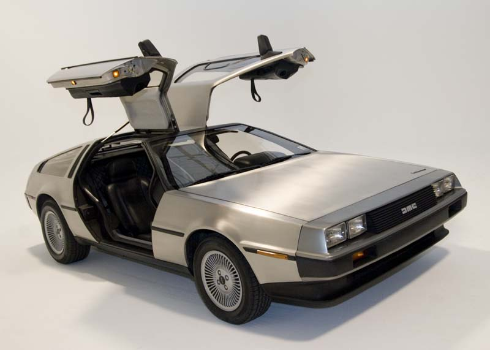

DeLorean
1981-1983
The DMC DeLorean (often referred to as the "DeLorean") is a rear-engine, two-door, two-passenger sports car
manufactured and marketed by John DeLorean's DeLorean Motor Company (DMC) for the American market from 1981 to
1983—ultimately the only car brought to market by the fledgling company.
 width="830px" height="687px"/>